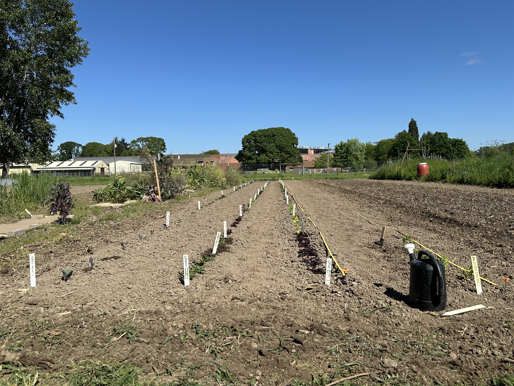

Oak Creek · Dry Farm
Dry Farming Greens Plots, 2026
Welcome to our growing diary. We photograph each crop to track progress from seedling to bolting. Explore the planting plan below — hover any bed for photos, click for full timelines.
Explore garden map
Interactive Garden Map
Hover over each bed to preview growth photos. Click any section to open its crop timeline.
Move your mouse over any bed — photos follow near your cursor.